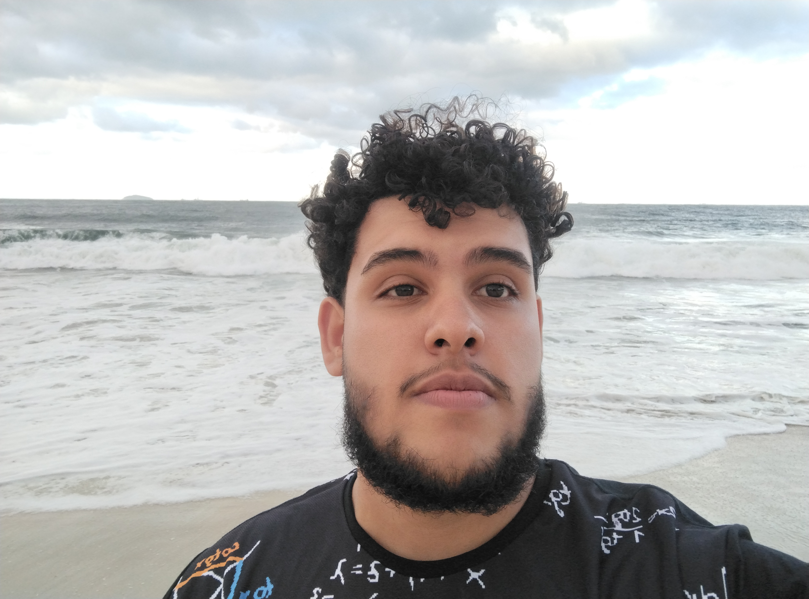

Entre a matemática, o ensino e a pesquisa.
Sou estudante de Matemática na Universidade Estadual de Campinas (Unicamp). Tenho interesse pela construção do conhecimento matemático, pela educação e pela investigação científica em Sistemas Dinâmicos.
Conheça minha trajetória
Biografia
Uma trajetória construída pelo estudo, pela curiosidade e pelo compromisso com a educação.
Sou graduando em Matemática pela Universidade Estadual de Campinas (Unicamp). Minha formação tem sido marcada pelo aprofundamento dos fundamentos matemáticos e pelo interesse em compreender ideias e estruturas com rigor.
Na iniciação científica, estudo tópicos de Sistemas Dinâmicos, com atenção especial aos sistemas dinâmicos discretos unidimensionais e ao Teorema de Sharkovsky.
Também atuo na educação popular, experiência que reforça meu interesse pelo ensino e pela democratização do acesso ao conhecimento.
Áreas de interesse
Matemática
Sistemas Dinâmicos
Análise Matemática
Educação Matemática
Ensino e pesquisa
Ensino
O ensino como prática de construção coletiva do conhecimento e transformação social.
Apostila de Matemática
Material didático elaborado para auxiliar no processo de aprendizagem matemática, reunindo conteúdos, explicações e exercícios.
Abrir apostila (PDF)Cursinho popular
Atuação em um projeto de educação popular pré-vestibular, contribuindo para ampliar oportunidades de acesso ao ensino superior.
Organização pedagógica
Experiência de coordenação e colaboração na organização das atividades educacionais e no acompanhamento do trabalho coletivo.
Pesquisa
A investigação científica como caminho para a produção de conhecimento e novas descobertas.
Sistemas Dinâmicos
Estudo de sistemas dinâmicos discretos, com foco no comportamento de órbitas e pontos periódicos.
Teorema de Sharkovsky
Investigação de resultados sobre a existência de órbitas periódicas em sistemas dinâmicos unidimensionais.